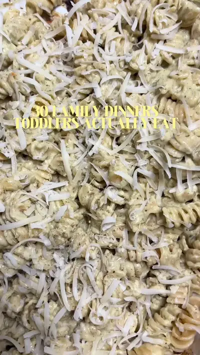

Zucchini Oven Pasta

Ingredients
- 1 zucchini
- ½ onion
- 1 whole garlic bulb, cut in half
- 2 tbsp olive oil
- ½ cup cream cheese
- ¼ cup heavy cream
- ½ tsp dried basil
- ½ tsp oregano
- Salt (1 year+ only)
- Black pepper
- Cooked pasta
- Freshly grated Parmesan
Steps
- Bake the zucchini, onion, the whole garlic bulb (cut in half, skin on), olive oil, cream cheese, basil, oregano, pepper, and salt if serving 1 year+ at 400°F (200°C) for 30 minutes.
- Squeeze the roasted garlic out of its skin, blend everything with the heavy cream until smooth, then toss only as much sauce as you need with cooked pasta and save the rest for another meal.
- Finish with freshly grated Parmesan
Recipe text as written by @soniamazri on TikTok. Open original